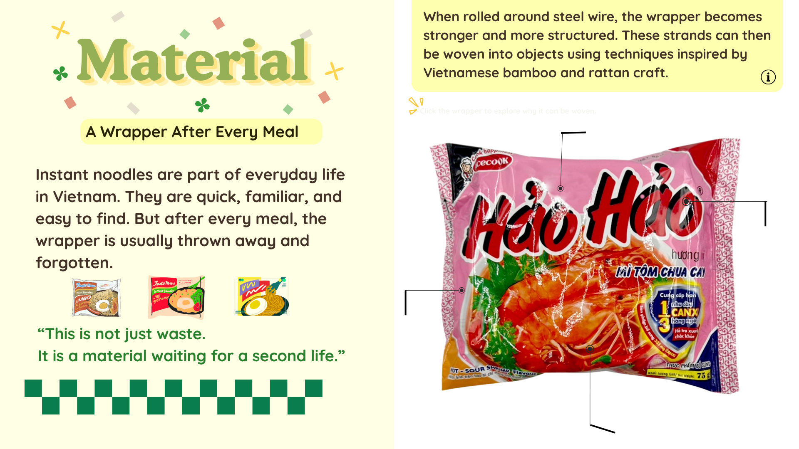
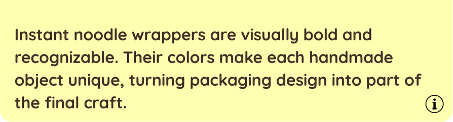
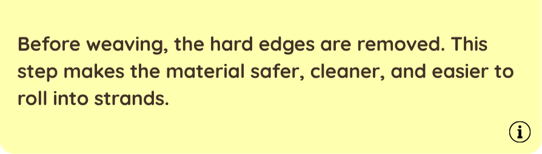
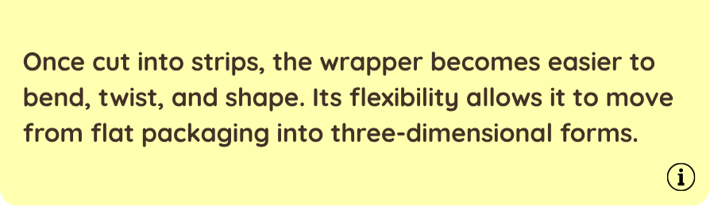
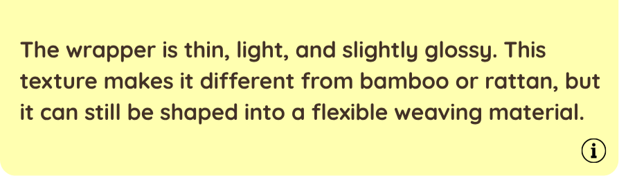
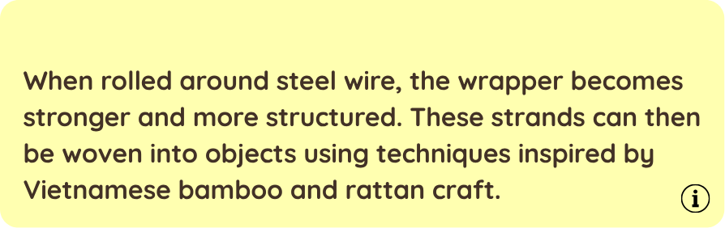

<section id="s02-material">
  <video muted playsinline id="video-s02" onended="this.parentElement.classList.add('video-ended')">
    <source src="assets/section_2_1.mp4" type="video/mp4">
  </video>
  

  <div class="s02-labels">
    <!-- 4 nút tròn tương tác -->
    <div class="s02-btn btn-1"></div>
    <div class="s02-btn btn-2"></div>
    <div class="s02-btn btn-3"></div>
    <div class="s02-btn btn-4"></div>

    <span class="s02-label label-1">Color</span>
    <span class="s02-label label-2">Hard Edges</span>
    <span class="s02-label label-3">Flexibility</span>
    <span class="s02-label label-4">Plastic Texture</span>

    <!-- Vùng màu đỏ bên phải -->
    <div id="s02-hover-zone"></div>

    <!-- Bạn có thể điều chỉnh vị trí của nút click này trong CSS bằng #s02-click-hint -->
    

    <!-- 5 Dropdown images -->
    
    
    
    
    <!--  -->
  </div>
</section>